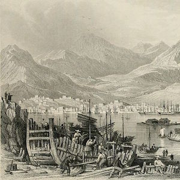
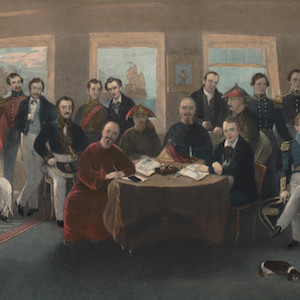
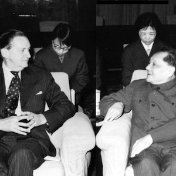
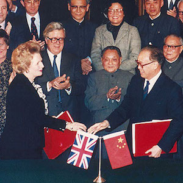
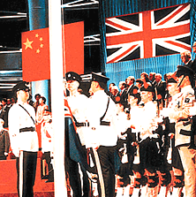

Pages
Explore elements of each page of my exhibit.
View exhibit here
. **Pictures of the back of covers will be uploaded soon. Updating as of 8/19/15 **
Transfer of Sovereignty Pg.6
Hong Kong Jockey, Hong Kong Aviation
Transfer of Sovereignty Pg.7
Maps of Hong Kong, The life and times of Queen Elizabeth
Transfer of Sovereignty Pg.8
100 Years of Electricity Anniversary, 150th Anniversary of HKPO

Post-Handover Pg.12
'97 HK Stamp Exhibition, Lantau Link
Additional Resources/References (Click Below)
Philatelic
The Transition of Hong Kong’s Philatelic Ownership by Ethan Chiu(Me)General History
The Hong Kong Reader: Passage to Chinese Sovereignty by Ming K. Chan, Gerard A. PostiglioneA Concise History of Hong Kong by John Mark Carroll
1979 Oct 30 Tu, Margaret Thatcher Speech toasting Chinese Premier (Hua Guofeng)
Ocean Park History
Underground Front: The Chinese Communist Party in Hong Kong By Christine Loh
When Margaret Thatcher Came to China by MATT SCHIAVENZA
A Modern History of Hong Kong By Steve Tsang
Hong Kong Jockey Club History
Timeline: Hong Kong
Another Timeline Hong Kong
Milestones of Hong Kong's Constitutional Development - Timeline
Timeline of Hong Kong
-

Pre-1842
Small Fishing Village
Hong Kong, a fishing community, is under China's rule. Nevertheless, at the time, Hong Kong was lightly populated and was largely ignored by Chinese officials.
-

August 29, 1842
Treaty of Nanking
On this date, the Treaty of Nanking was signed, marking the start of British Rule.
-

1979
MacLehose meets Deng
At this time, China's Premier Deng Xiaoping invited Hong Kong's governor Murray MacLehose to Beijing. Deng told MacLehose that China might take over Hong Kong by 1997 but it would respect Hong Kong's special status.
This meeting marked first ocassion high level talks on Hong Kong Sovereignty between Britain and Hong Kong. -

June, 1982
Thatcher meets Deng
Chinese Premier Deng Xiaoing meets Britain's prime minister Margaret Thatcher. Deng stood firm on his intention of taking back Hong Kong. Thatcher tried to hold her line by saying that China would violate the international treaty if China tried to take the Hong Kong.
-

July 1, 1979
Hong Kong Handover
Hong Kong is officially handed over to the People's Republic of China. China pledges to take care of Hong Kong under their "one country, two systems" mantra.
About Me
Ethan Chiu
Hacker, Maker, History Lover